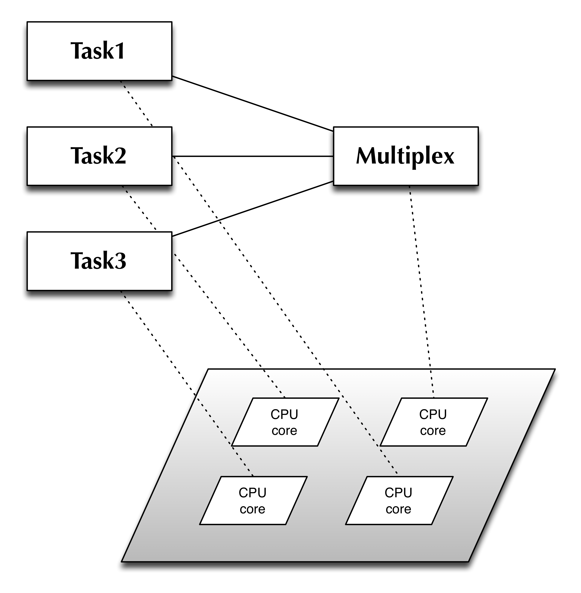

A world of concurrency
Story of discovery
Talk outlines
- Concurrency vs Parallelism
- From locks to freedom
- C++/Python vs Go/Erlang
- Examples
A deep understanding of concurrency is hard-wired into our
brains. We react to stimulation extremely quickly, in a part
of the brain called the amygdala, without this reaction system
we would die. Conscious thought is just too slow, by the time
the thought "hit the brakes" has formed itself, we have
already done it.
On a motorway, I mentally track the positions of dozens, or
hundreds of cars, this is done without conscious thought. If I
couldn't do this I would probably be dead.
Joe Armstrong, creator of Erlang language
Concurrency vs parallelism
- Concurrency is about dealing with lots of things at once.
A way to structure a solution to solve a problem that may (but not necessarily) be parallelizable. For example, handling mouse, keyboard, display, and disk drivers
- Parallelism is about doing lots of things at once.
A way to execute given solution at once, e.g. read multiple files, perform calculations
If you have only one processor, your program can still be concurrent but it cannot be parallel. On the other hand, a well-written concurrent program might run efficiently in parallel on a multiprocessor.
Rob Pike, Concurrency is not parallelism
Concurrent model example
GophersConcurrency vs parallelism
Concurrency is a way to structure a program by breaking it into pieces that can be executed independently.
Communication is the means to coordinate the independent executions.
This is the Erlang/Go-language model and (and others) it's based on CSP paper by C.A.R. Hoare [1978]
Thread safety is really hard. That's why it took me a year to get a threaded framework actually working :)

We don't have shared memory. I have my memory, you have yours, we have two brains, one each, they are not joined together. To change your memory I send you a message, I talk or wave my arms. You listen, you see, your memory changes, but without asking you a question or observing your response I do not know that you have received my messages.
People function as independent entities that communicate by sending messages.
If somebody dies other people will notice and do some actions.
These interaction patterns well-know to us, from birth onwards we learn to interact with the world by observing it and by sending it messages and observing the responses.
That's how Erlang programs work. This simple model of programming is part of a model I call Concurrency Oriented Programming.
Erlang is a general-purpose concurrent, garbage-collected programming
language and runtime system. The sequential subset of Erlang is a
functional language, with strict evaluation, single assignment, and
dynamic typing. It was designed by Ericsson to support distributed,
fault-tolerant, soft-real-time, non-stop applications. It supports hot
swapping, so that code can be changed without stopping a system.
While threads require external library support in most languages, Erlang provides language-level features for creating and managing processes with the aim of simplifying concurrent programming. Though all concurrency is explicit in Erlang, processes communicate using message passing instead of shared variables, which removes the need for locks.
The first version was developed by Joe Armstrong in 1986. It was originally a proprietary language within Ericsson, but was released as open source in 1998.
Wikipedia
The language was officially announced in November 2009 and is now used in Google's production systems. Go's "gc" compiler targets the Linux, Mac OS X, FreeBSD, OpenBSD, Plan 9, and Microsoft Windows operating systems and the i386, amd64, and ARM processor architectures.
Go aims to provide the efficiency of a statically typed compiled language with the ease of programming of a dynamic language. Other goals include:
Wikipedia
Don't communicate by sharing memory, share memory by communicating.
If you need more fun, go to Go playground or look at concurrent implementation of power series.
Communication is the means to coordinate the independent executions.
This is the Erlang/Go-language model and (and others) it's based on CSP paper by C.A.R. Hoare [1978]
- Communicating Sequential Processes (CSP) is a formal language for describing patterns of interaction in concurrent systems based on message passing via channels.
Threading model
"Classical" approach: threads, semaphors, locks:
from threading import Thread
class Worker(Thread):
"""Thread executing tasks from a given tasks queue"""
def __init__(self, tasks):
Thread.__init__(self)
self.tasks = tasks
self.daemon = True
self.start()
def run(self):
"""Run thread loop."""
while True:
func, args, kargs = self.tasks.get()
try:
func(*args, **kargs)
except Exception as exp:
print_exc(exp)
self.tasks.task_done()
Threading model
from Queue import Queue
class ThreadPool:
"""Pool of threads consuming tasks from a queue"""
def __init__(self, num_threads):
self.tasks = Queue(num_threads)
for _ in xrange(num_threads):
Worker(self.tasks)
def add_task(self, func, *args, **kargs):
"""Add a task to the queue"""
self.tasks.put((func, args, kargs))
def wait(self):
"""Wait for completion of all the tasks in the queue"""
self.tasks.join()
Threading model
What about shared resources, hah that's easy use locks, e.g.
- check resource
- "lock" the object
- do some machinery
- "unlock" the object
Dealing with locks
lock = threading.Lock()
def get_first_part():
lock.acquire()
try:
... fetch data for first part from shared object
finally:
lock.release()
return data
def get_second_part():
lock.acquire()
try:
... fetch data for second part from shared object
finally:
lock.release()
return data
And here it goes
def get_both_parts():
first = get_first_part()
second = get_second_part()
return first, second
def get_both_parts():
lock.acquire()
try:
first = get_first_part()
second = get_second_part()
finally:
lock.release()
return first, second
Threading model, what's wrong
Everything that can go wrong will go wrong (c) Murphy
- threads are expensive and limited on your system
- you must allocate and manage your pool
- sharing data structures or memory is a way to having nightmare
- locks are complex, e.g. taking to few/many or wrong locks, locks order is matter
- data racing, memory management, thread safety, etc.
Thread safety is really hard. That's why it took me a year to get a threaded framework actually working :)
Chris Jones
Apache vs Yaws (Erlang) (2002)
Thoughput (KBytes/second) vs. load. Apache (blue, run on NFS) and (green, run on local filesystem) dies at 4k parallel requests, Yaws (red, run on NFS) stays alive even at 80k parallel requests.
The problem with Apache is not related to the Apache code per
se but is due to the manner in which the underlying operating
system (Linux) implements concurrency. We believe that any
system implemented using operating system threads and
processes would exhibit similar performance. Erlang does not
make use of the underlying OS's threads and processes for
managing its own process pool and thus does not suffer from
these limitations.
http://www.sics.se/~joe/apachevsyaws.html
http://www.sics.se/~joe/apachevsyaws.html
Real world concurrency
We don't have shared memory. I have my memory, you have yours, we have two brains, one each, they are not joined together. To change your memory I send you a message, I talk or wave my arms. You listen, you see, your memory changes, but without asking you a question or observing your response I do not know that you have received my messages.
People function as independent entities that communicate by sending messages.
If somebody dies other people will notice and do some actions.
These interaction patterns well-know to us, from birth onwards we learn to interact with the world by observing it and by sending it messages and observing the responses.
That's how Erlang programs work. This simple model of programming is part of a model I call Concurrency Oriented Programming.
Joe Armstrong, Concurency is easy
While threads require external library support in most languages, Erlang provides language-level features for creating and managing processes with the aim of simplifying concurrent programming. Though all concurrency is explicit in Erlang, processes communicate using message passing instead of shared variables, which removes the need for locks.
The first version was developed by Joe Armstrong in 1986. It was originally a proprietary language within Ericsson, but was released as open source in 1998.
Wikipedia
Erlang example
Server code
-module(myserver).
server(Data) ->
receive
{From,{request,X}} ->
{R, Data1} = fn(X, Data),
From ! {myserver,{reply, R}},
server(Data1)
end.
Client code
-export([request/1]).
request(Req) ->
myserver ! {self(),{request,Req}},
receive
{myserver,{reply,Rep}} ->
Rep
end.
For more check
here
Why we prefer python vs C++
C++:
what is the difference, if any, among the following?
widget w; // (a)
widget w(); // (b)
widget w{}; // (c)
widget w(x); // (d)
widget w{x}; // (e)
widget w = x; // (f)
widget w = {x}; // (g)
auto w = x; // (h)
auto w = widget{x}; // (i)
Python test, what is a data type of variable "a"?
def gen():
for i in range(0,5): yield i
a = [i for i in gen()]
a = (i for i in gen())
a = 1
Why we prefer C++ vs python
A comparison of weave with NumPy, Pyrex, Psyco, Fortran (77 and 90) and C++
for solving Laplace's equation. Here are some timing results for a 500x500
grid for 100 iterations.
Type of solution Time taken (sec) Python (estimate) 1500.0 Python + Psyco (estimate) 1138.0 Python + NumPy Expression 29.3 Blitz 9.5 Inline 4.3 Fast Inline 2.3 Python/Fortran 2.9 Pyrex 2.5 Matlab (estimate) 29.0 Octave (estimate) 60.0 Pure C++ 2.16NumPy/SciPy project
Can we have both worlds
-
Fortran/C/C++ are static languages, their strength is speed, but they hard to
program.
-
Perl/Python/Ruby are dynamic languages, their strength is flexibility and
readability, it is easy to write program in them, but they luck of speed.
-
Erlang is a functional dynamic language, its stregth is concurrency, but not
necessary speed or readibility.
- Go is a static language but it feels like a scripting language, plus it has concurrency built in.
Go, meet a new trend
Go, otherwise known as Golang, is an open source, compiled, garbage-collected, concurrent system programming language. It was first designed and developed at Google Inc. beginning in September 2007 by Robert Griesemer, Rob Pike, and Ken Thompson.The language was officially announced in November 2009 and is now used in Google's production systems. Go's "gc" compiler targets the Linux, Mac OS X, FreeBSD, OpenBSD, Plan 9, and Microsoft Windows operating systems and the i386, amd64, and ARM processor architectures.
Go aims to provide the efficiency of a statically typed compiled language with the ease of programming of a dynamic language. Other goals include:
- Safety: Type-safe and memory-safe.
- Intuitive concurrency by providing "goroutines" and channels to communicate between them.
- Efficient garbage collection "with low enough overhead and no significant latency".
- High-speed compilation.
Wikipedia
Go code example
package main
import "fmt"
import "time"
import "math/rand"
func boring(msg string, c chan string) {
for i := 0; ; i++ {
c <- fmt.Sprintf("%s %d", msg, i) // Expression to be sent
time.Sleep(time.Duration(rand.Intn(1e3)) * time.Millisecond)
}
}
func main() {
c := make(chan string) // create output channel
go boring("boring!", c) // submit go routine, a la thread
for i := 0; i < 5; i++ {
fmt.Printf("You say: %q\n", <-c) // Receive msg and print it
}
fmt.Println("You're boring; I'm leaving.")
}Go goroutines and channels
- goroutine is an independently executing function, launched by a go statement
- it has its own call stack, which grows and shrinks as required
- it's very cheap and it's not thread
- there might be only one thread in a program with thousands of goroutines
- go channel provides a connection between goroutines, allowing them to communicate
- channel may have different data types
- you can mix and multiplex channels
- they're bi-directional
Don't communicate by sharing memory, share memory by communicating.
Multiplexer example
package main
import "fmt"
import "time"
import "math/rand"
func boring(msg string) <-chan string { // Returns receive-only channel
c := make(chan string)
go func() { // We launch the goroutine from inside the function.
for i := 0; ; i++ {
c <- fmt.Sprintf("%s %d", msg, i)
time.Sleep(time.Duration(rand.Intn(1e3)) * time.Millisecond)
}
}()
return c // Return the channel to the caller.
}
func multiplexer(input1, input2 <-chan string) <-chan string {
c := make(chan string)
go func() {
for {
select {
case s := <-input1: c <- s
case s := <-input2: c <- s
}
}
}()
return c
}
func main() {
c := multiplexer(boring("Joe"), boring("Ann"))
for i := 0; i < 10; i++ {
fmt.Println(<-c)
}
fmt.Println("You're both boring; I'm leaving.")
}
If you need more fun, go to Go playground or look at concurrent implementation of power series.
Concurrent model
This implementation will work equally fine on one or more cores. Real world example
Write a code which will fetch data in parallel from provided list of URLs.
- Erlang implementation
- Go implementation
- Python implementation(via pycurl/Curl libraries)
- C++ implementation, your home work
Erlang implementation
process_urls(L) ->
process_urls(L, []).
process_urls([Url|T], Results) ->
Id = urlfetch_uuid:new(),
Payload = "",
Headers = "",
spawn(fetch, [Id, Url, get, Payload, Headers]),
Output = get_result(Id),
process_urls(T, Results++[Output]);
process_urls([], Results) -> Results.
Spawn processes with fetch function through the recursion.
Go implementation
func RequestHandler(w http.ResponseWriter, r *http.Request) {
ch := make(chan []byte)
for _, url := range urls {
go Fetch(url, ch)
}
for i:=0; i < len(urls); i++ {
w.Write(<-ch)
w.Write([]byte("\n"))
}
}
Submit go-routines and collect results via channel
Python implementation
import pycurl
import StringIO
def getdata(urls, ckey, cert, headers=None, num_conn=100):
# Make a queue with urls
queue = [u for u in urls if validate_url(u)]
# Check args
num_urls = len(queue)
num_conn = min(num_conn, num_urls)
# Pre-allocate a list of curl objects
mcurl = pycurl.CurlMulti()
mcurl.handles = []
for _ in range(num_conn):
curl = pycurl.Curl()
curl.fp = None
curl.setopt(pycurl.FOLLOWLOCATION, 1)
curl.setopt(pycurl.MAXREDIRS, 5)
curl.setopt(pycurl.CONNECTTIMEOUT, 30)
curl.setopt(pycurl.TIMEOUT, 300)
curl.setopt(pycurl.NOSIGNAL, 1)
curl.setopt(pycurl.SSLKEY, ckey)
curl.setopt(pycurl.SSLCERT, cert)
curl.setopt(pycurl.SSL_VERIFYPEER, False)
mcurl.handles.append(curl)
if headers:
curl.setopt(pycurl.HTTPHEADER, \
["%s: %s" % (k, v) for k, v in headers.iteritems()])
# Main loop
freelist = mcurl.handles[:]
num_processed = 0
while num_processed < num_urls:
# If there is an url to process and a free curl object,
# add to multi-stack
while queue and freelist:
url = queue.pop(0)
curl = freelist.pop()
curl.setopt(pycurl.URL, url.encode('ascii', 'ignore'))
bbuf = StringIO.StringIO()
hbuf = StringIO.StringIO()
curl.setopt(pycurl.WRITEFUNCTION, bbuf.write)
curl.setopt(pycurl.HEADERFUNCTION, hbuf.write)
mcurl.add_handle(curl)
# store some info
curl.hbuf = hbuf
curl.bbuf = bbuf
curl.url = url
# Run the internal curl state machine for the multi stack
while 1:
ret, _num_handles = mcurl.perform()
if ret != pycurl.E_CALL_MULTI_PERFORM:
break
# Check for curl objects which have terminated, and add them to the
# freelist
while 1:
num_q, ok_list, err_list = mcurl.info_read()
for curl in ok_list:
hdrs = curl.hbuf.getvalue()
data = curl.bbuf.getvalue()
url = curl.url
curl.bbuf.flush()
curl.bbuf.close()
curl.hbuf.close()
curl.hbuf = None
curl.bbuf = None
mcurl.remove_handle(curl)
freelist.append(curl)
yield {'url': url, 'data': data, 'headers': hdrs}
for curl, errno, errmsg in err_list:
hdrs = curl.hbuf.getvalue()
data = curl.bbuf.getvalue()
url = curl.url
curl.bbuf.flush()
curl.bbuf.close()
curl.hbuf.close()
curl.hbuf = None
curl.bbuf = None
mcurl.remove_handle(curl)
freelist.append(curl)
yield {'url': url, 'data': None, 'headers': hdrs,
'error': errmsg, 'code': errno}
num_processed = num_processed + len(ok_list) + len(err_list)
if num_q == 0:
break
# Currently no more I/O is pending, could do something in the meantime
# (display a progress bar, etc.).
# We just call select() to sleep until some more data is available.
mcurl.select(1.0)
cleanup(mcurl)
def cleanup(mcurl):
"Clean-up MultiCurl handles"
for curl in mcurl.handles:
if curl.hbuf is not None:
curl.hbuf.close()
curl.hbuf = None
if curl.bbuf is not None:
curl.bbuf.close()
curl.bbuf = None
curl.close()
mcurl.close()
Multiple nested loops via third-party library
References:
- CSP model
- Erlang language
- Go language
- Go for C++ Programmers
- Rob Pike, Go language
- Rob Pike, Concurrency Is Not Parallelism
- Rob Pike, Go Concurrency Patterns